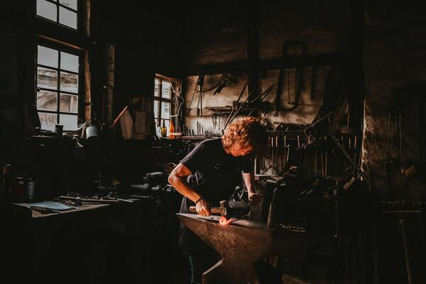

Qué entendemos por artesanía
Domingo 10 de abril, 2022
Qué es artesanía
Como artesanía denominamos el arte y técnica de elaborar objetos o productos a mano, con poca o ninguna intervención de maquinarias, y conforme a métodos tradicionales. Añadimos a esta definición clásica un dato importante para entender este mundo y el valor de sus productos: TIEMPO. Las técnicas q se emplean para realizar el producto requieren mucho tiempo y el aprendizaje de estas técnicas requiere también mucho tiempo.
Artesanía y manualidades
La artesanía no debe confundirse con las manualidades. Las manualidades son trabajos hechos con las manos, especialmente por escolares para aprender a trabajar con distintas técnicas y materiales. La artesanía, en cambio, también elaborada a mano, mediante un conjunto de técnicas tradicionales, tiene un valor artístico, cultural y simbólico único.
Artesanía y procesos industriales
En el trabajo artesanal, suelen utilizarse herramientas o instrumentos rudimentarios, y rara vez se emplean maquinarias o procesos automatizados. No obstante, en ocasiones sí son empleados algunos procesos de función mecánica que permiten agilizar ciertas tareas. Los productos elaborados mediante técnicas y procesos industriales son la principal competencia para la artesanía, puesto que estos tienen mejor distribución y son fabricados a un coste considerablemente inferior. La artesanía, sin embargo, tiene un valor simbólico y cultural mayor. La principal fabrica del mundo globalizado son los países asiáticos y por ello sus productos se ven como muy competitivos para el mundo artesanal.
Productos artesanales
Los productos artesanales tienen un valor único, pues son la expresión de los valores simbólicos o ideológicos de una cultura, y son realizados con particular calidad y maestría a partir de técnicas muy antiguas, que varían de región a región, de cultura a cultura, e, incluso, en función del clima, los recursos o la historia de un lugar. Las obras de artesanía pueden tener los siguientes usos:
- Herramientas
- Prendas de vestir
- Joyas
- Indumentaria y accesorios para actividades y arte del espectáculo
- Recipientes y elementos empleados para el almacenamiento
- Objetos usados para el transporte o protección contra la intemperie
- Artes decorativas y objetos rituales
- Instrumentos musicales
- Enseres domésticos
- Juguetes lúdicos o didácticos
Ramas de la artesanía
Algunas ramas de la artesanía son la alfarería, la bisutería, la cerámica, la cestería, la ebanistería, la orfebrería, la talabartería, la talla en madera o la tapicería, entre otros.